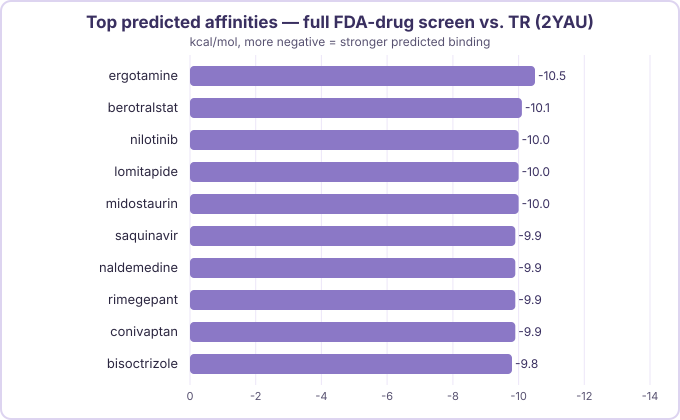

Screening Trypanothione Reductase: The Pivot Away from Specialty Drugs
PTR1's top hits were all $8,000–19,000+/month cancer drugs — so I went looking for a completely different Leishmania target instead of giving up on the "cheap repurposing" idea.
Step 1: The problem with PTR1's winners
Every single one of PTR1's top 10 hits turned out to be an expensive oncology or rare-disease specialty drug — alectinib and entrectinib (lung cancer), risdiplam (spinal muscular atrophy), eltrombopag and tolvaptan (black-box warnings attached), olaparib (another black box). Most of them run $8,000–19,000+ per month in the US. The one partial exception, dihydroergotamine, was still expensive per dose. That's close to the opposite of what this whole project is supposed to be about: visceral leishmaniasis doesn't have a treatment option that's cheap, safe, and easy to take all at once, and a repurposing candidate that costs more than the disease's current best option isn't actually solving anything.
I could have picked a different disease. Instead I picked a different target — same disease, different parasite protein, on the theory that a chemically unrelated binding pocket might attract a different class of drug than PTR1's kinase-inhibitor-heavy result.
Step 2: Picking the next targets
I looked at three other essential points in the parasite's biology: redox defense, membrane biosynthesis, and DNA replication. Full writeup: attack-vectors-shortlist-2026-07-30.md.
- Trypanothione reductase (TR) — the target of this post. Trypanosomatids (Leishmania, Trypanosoma) don't use the glutathione/glutathione-reductase redox system every other eukaryote uses — they run a parasite-specific trypanothione/TR system instead, which keeps the parasite's peroxide-neutralizing machinery working while it's under attack from macrophages. That system doesn't exist in humans at all, which is about as clean a selectivity argument as a drug target gets.
- CYP51 (sterol 14α-demethylase) — a strong near-term follow-up, not a fallback. It's already known that cheap azole antifungals inhibit this enzyme and have real antileishmanial activity, so it doubles as a pipeline sanity check: if the pipeline is working, the known cheap azoles should show up near the top.
- DNA topoisomerase IB — deprioritized for now. Camptothecin-class inhibitors work by wedging into the DNA–enzyme complex mid-reaction, not by binding a normal protein pocket, which doesn't fit this pipeline's protein-only docking approach without a much bigger setup change.
TR went first, with CYP51 as the planned next screen (that one's its own post).
Step 3: A receptor with a twist — you need both halves this time
I used PDB 2YAU, trypanothione reductase from Leishmania infantum. TR is different from PTR1 in an important way: PTR1's four identical chains each have their own independent pocket, so I only needed to keep one. TR's real druggable pocket sits between its two chains — it's an inter-subunit cavity, sometimes called the "mepacrine binding site" in the literature, built from both the FAD domain of one chain and the interface domain of the other. Strip it down to a single chain and the pocket doesn't exist anymore. So this receptor keeps the full A+B homodimer, with FAD and NADPH cofactors retained on both chains (the pocket needs them in place, same reasoning as keeping PTR1's NADP+), and auranofin, chloride, sulfate, and waters stripped out.
Step 4: Finding the pocket
fpocket's top hit on the A+B dimer was pocket 1, druggability score 0.731 — the inter-subunit cavity the literature already describes. Docking box centered on (−18.258, −30.263, −2.880), sized 22×22×22 Å, search_depth 100.
Step 5: Smoke test
Same rule as always — small batch before the full library. I ran 20 drugs through the new box. Ergotamine came out on top. Worth remembering, because it doesn't stay a coincidence.
Step 6: The real screen
Same 1,840-drug FDA-approved library as PTR1, 1,795 of 1,808 attempted drugs docked successfully.

Ergotamine topped the full screen too — the same drug that won the 20-compound smoke test, on a completely independent, much larger run. That's now a real consistency signal, and it gets more interesting: ergotamine's close relative dihydroergotamine landed in PTR1's top 10 as well, on a totally different pocket. Two independent targets, three separate runs, the same ergot-alkaloid scaffold each time.
The rest of the list is a mix of expensive specialty/orphan drugs (berotralstat, lomitapide, midostaurin — likely in the same $8k+/month range as PTR1's hits) and one repeat name from PTR1's own top 10: conivaptan. A drug scoring well against two chemically unrelated pockets is a little suspicious — it might just be a molecule Vina's scoring function likes in general, not one that's actually complementary to either pocket specifically. That question gets its own full treatment later, once a third screen exists to compare against.
Step 7: Does the pose actually make sense?
For PTR1 I rendered every top-10 pose in PyMOL and eyeballed them side by side. This time I did the check quantitatively instead: pulled each hit's best-ranked pose from the docking output, found its center point, and measured two things — how far that center sits from the box's center (do all 10 cluster together, or is something drifting off to a corner?), and for the top hit specifically, how close it actually sits to the literature-matched pocket residues.
| Drug | Distance to box center |
|---|---|
| ergotamine | 3.7 Å |
| berotralstat | 3.4 Å |
| nilotinib | 2.8 Å |
| lomitapide | 3.4 Å |
| midostaurin | 4.2 Å |
| saquinavir | 3.1 Å |
| naldemedine | 4.3 Å |
| rimegepant | 3.8 Å |
| conivaptan | 4.5 Å |
| bisoctrizole | 4.4 Å |
All 10 land within 2.8–4.5 Å of the box center in a 22 Å cube — tightly clustered, not scattered, the same physically-grounded signal the PTR1 pose renders showed visually. Ergotamine specifically contacts essentially every literature-matched pocket residue from both chains within 5 Å — it's genuinely sitting in the inter-subunit cavity the box was built around, not just floating somewhere nearby in the box.
Step 8: Has anyone already tested these against a parasite?
8 of the 10 hits have no published antiparasitic activity that I could find — the expected, hoped-for outcome for a repurposing screen, not a red flag. Two are more interesting:
Saquinavir has a real, directly relevant precedent. Savoia, Allice & Tovo tested the HIV protease inhibitors indinavir and saquinavir against Leishmania major and L. infantum growth back in 2005, and found saquinavir's IC50 against L. major was 7.0 µM (weaker activity against L. infantum, the species this project actually targets) — via proteasome inhibition, not TR. Real activity, different mechanism than what this screen tests for. Savoia D, Allice T, Tovo PA. "Antileishmanial activity of HIV protease inhibitors." Int J Antimicrob Agents. 2005;26(1):92–94. PMID 15955671.
Nilotinib has a related but weaker precedent: a 2024 structure-based virtual screen (a very similar approach to this project's own) found nilotinib more active against Trypanosoma cruzi (Chagas disease) than the reference drugs nifurtimox and benznidazole — but its own Leishmania mexicana hits were different compounds entirely (chlorhexidine, protriptyline), not nilotinib. Juárez-Saldívar A, et al. "Repositioning FDA-approved drug against Chagas disease and cutaneous leishmaniosis by structure-based virtual screening." Arch Med Res. 2024;55:102958. PMID 38290200.
Ergotamine itself has no published Leishmania or trypanothione-reductase literature at all — which, combined with the repeated docking signal, makes it the most interesting "no prior evidence, but a strong and repeated score" case the project has produced so far.
Step 9: Does the price make sense?
A great score and a real literature hit don't matter if a drug can't actually be cheap, safe, and simple — the entire reason visceral leishmaniasis is worth looking at in the first place. All prices below are current US list/retail figures pulled via web search, order-of-magnitude, not exact.
| Drug | Current approved use | Approx. US price | Key safety concerns |
|---|---|---|---|
| Ergotamine | Migraine | Caffeine-combo generic: ~$112–408/20 tabs w/ coupon; pure Ergomar brand: ~$872–1,643/20 tabs | Peripheral ischemia/vasospasm risk, worse with CYP3A4 inhibitors; contraindicated in cardiovascular disease and pregnancy |
| Berotralstat (Orladeyo) | Hereditary angioedema prevention | ~$23,800/28 days (~$310,000/year) | QTc prolongation risk |
| Nilotinib (Tasigna) | Ph+ chronic myeloid leukemia | ~$5,450–15,000/month | Black box: QT prolongation, sudden death reported |
| Lomitapide (Juxtapid) | Homozygous familial hypercholesterolemia | ~$54,400/28 capsules (~$200,000–300,000/year) | Black box: hepatotoxicity, REMS-restricted |
| Midostaurin (Rydapt) | FLT3-mutated AML | ~$13,100/28 days | Interstitial lung disease/pneumonitis warning |
| Saquinavir (Invirase) | HIV-1 infection (requires ritonavir boosting) | ~$344+/bottle, no generic | New-onset/worsening diabetes with ritonavir co-administration |
Full sourcing for all 10 hits (including naldemedine, rimegepant, conivaptan, and bisoctrizole): pricing-safety-profile.md.
Ergotamine, in its common caffeine-combo generic form, is genuinely affordable — a meaningfully better cost profile than dihydroergotamine's per-dose pricing was for PTR1, and it's the top hit on two independent runs against this target, not a single result. The pure Ergomar brand is expensive, so the specific formulation matters a lot, but a cheap generic version of the actual top-scoring molecule existing at all is new for this project. Everything else on the list falls into the same $5,000–300,000+/year specialty-drug pattern PTR1 produced.
What's next
Ergotamine is the most promising practical lead the project has found so far — cheap, decades of real-world safety data, and a docking signal that held up across two independent runs. That said, I'm holding off on calling it "novel and pocket-matched" until I can check it against a third, chemically unrelated target — if it scores just as well everywhere, that's a sign Vina just likes the molecule in general, not that it's complementary to this specific pocket. CYP51 is that third target, and it's next: Screening CYP51. None of this is a therapeutic claim — these are computational predictions worth investigating further, not proof that anything here actually works against leishmaniasis.
A quick note on how this got built
I built this target research, the receptor prep, and the docking run working with Claude Code, same as the rest of the pipeline, and I'd rather say that outright than leave it quiet. The target shortlist, the literature searches, and the pricing/safety pull all moved a lot faster with it than they would have solo. The decisions — which target to run next, what counts as a good enough validation, how to read the results — are still mine.